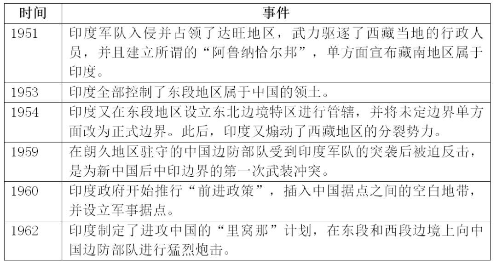
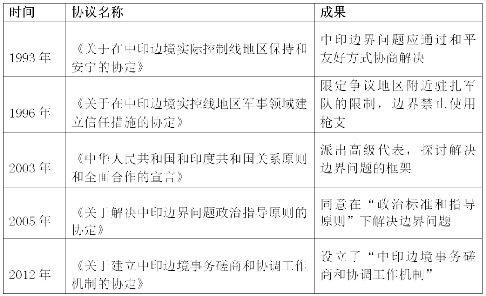

收录于合集
编者荐语：
中印边界为何屡发冲突？过去几十年来中印是如何管控边界争端的？加勒万河谷冲突事件是怎么回事？中印政府在争议地区的外交政策和立场是什么？本期视频，国小政将为大家一一解答这些问题。
另：今天推送的结尾有小彩蛋哦！
以下文章来源于秒懂国关 ，作者秒懂国关
 秒懂国关 .
秒懂国关 .
国际关系也可以如此接地气
中印边境冲突
本文约 3000字 ，预计阅读时长 3分钟
2020年6月15日，在加勒万河谷地区，中印双方发生了激烈的对峙和冲突，我方4名官兵牺牲，1名团长重伤。在向祖国戍边英烈表达缅怀与尊敬的同时，我们也需要了解中印边界问题的来龙去脉，以便更好地解决问题。本期，国小政将为您解读中印边界争议、加勒万河谷冲突始末与中印双方关于边界冲突的方针。
详情请点击下方小程序查看原视频~
本期编委
【配音】
杜丛竹 **
**
【文案】
秦子宁、石寒冰、游钜家、刘瑛琛
【剪辑】
毛雅欣
【后期】
李九阳、游钜家
【排版】
董诗
一、中印争议地区简介
中印边界分为东、西、中三段，重点争议的地区为东段的藏南地区和西段的阿克赛钦地区。
中印领土争议示意图
图源[1]
阿克赛钦地区位于喀喇昆仑山脉和昆仑山脉之间，在行政区划上，大部分地域归新疆维吾尔自治区和田地区管辖，南部小一部分归西藏自治区阿里地区管辖。
“阿克赛钦”由维吾尔语音译而来，“阿克赛”的意思是“白石滩”，“钦”有两种解释，一为“中国”的意思，即“中国的白石滩”；一为“通道”的意思。阿克赛钦是从新疆进入西藏的必经之路，对我国具有重要的战略意义。
克什米尔地区与阿克赛钦地图
图源[2]
藏南地区位于喜马拉雅山脉南侧，西接不丹，东临缅甸，南部是印度的阿萨姆邦和那加兰邦。藏南地区有“西藏江南”的美誉，同时还是藏文化区的重要部分。第六世达赖喇嘛仓央嘉措，就是写“不负如来不负卿”的那位诗人，就出生于藏南的达旺地区。
仓央嘉措
二、中印边境产生争议的原因
中印会产生边界纠纷，一切都离不开英国殖民者这个老“trouble maker”。
时间回到19世纪，病入膏肓的清政府对边境地区管控能力下降，控制着印度的英国殖民者开始打上我国西藏地区的主意，甚至还给自己的狼子野心披上了一张“羊皮”，搞出了所谓的“麦克马洪线”和“约翰逊线”。东段藏南地区的归属涉及传统边界线和麦克马洪线之争。传统边界线是在中印两国人民长期友好交往和历来的行政管辖中形成的，“麦克马洪线”则是20世纪初英属印度政府以喜马拉雅山脊分水岭的连接线为界画出来的。根据“麦克马洪线”，藏南地区被划归为印度领土。西段的“约翰逊线”影响了阿克赛钦地区的归属。19世纪 60年代，英国的测绘军官约翰逊擅自将中印边界线画到了昆仑山脉，我国的阿克塞钦地区就这样被画进了英印的属地内。但是，英印的这些小动作从未获得清政府、中华民国政府和中华人民共和国政府的承认。
二战后，英国殖民体系瓦解，印度继承了英属印度时期的中印边界。独立后的印度做起了白日梦，认为中印边界已经划定，开始赖在藏南地区不走，甚至还厚着脸皮问中国讨要阿克赛钦地区。面对印度丰富的想象力，新中国表示，我们可以坐下来谈谈，这样对双方都有利。
可惜的是，20世纪50、60年代，印度民族主义者势头正盛，边界谈判并不能满足他们的想象力，所以中印边界问题一直没有得到解决。谈判不成，印度就一直在边界暗戳戳地搞事情。
表1 1951-1962年期间印度在中印边界的入侵行为

而当中国建设属于我们的阿克赛钦地区时，印度却要大声叫嚷。就这样，局势已经一步步滑向战争。1962年，中国开展了应对印度入侵的自卫反击战，并迅速取得了军事胜利。但由于当时后勤补给的限制，还有中国以和平谈判解决边界问题而反对以武力改变边界现状的一贯立场，战争最终以中方主动后撤结束。
此后，中印双方针对边境问题进行了数次谈判，但边界问题至今仍悬而未决。
表2 中印针对边境问题进行的一系列谈判[1]

三、加勒万河谷冲突始末 ****
中国在1962年中的军事胜利在一段时间内对印度形成了震慑作用，但无奈印度这个国家太具乐天精神，好了伤疤就忘了疼。时间一久，印度又开始在中印边界寻衅滋事，加勒万河谷冲突便是一例。
2019年10月31日，印度正式宣布实施《查谟- 克什米尔重组法》，取消印控克什米尔地区的自治，成立所谓的“查谟和克什米尔中央直辖区”和“拉达克中央直辖区”，将部分中国领土划入印度行政管辖范围，该举措严重侵犯了中国主权权益，引起中国的强烈不满和坚决反对，为2020年6月中印边境西段加勒万河谷地区局势紧张埋下了伏笔。
2020年4月以来，印度多次派军越过西段的中印边境实际控制线进行非法活动，修路架桥，单方面改变当地现状。2020年5月6日凌晨，印度边防部队从加勒万河谷越线进入中国境内，构工设障，阻拦中方边防部队正常巡逻，蓄意挑起事端。
加勒万河谷地区
图源[3]
6月6日，两国边防部队举行了第一轮军长级别的会晤，形成脱离接触共识，且印方承诺不越过加勒万河口巡逻和修建设施，同意分批撤军。但6月15日晚，印方反悔承诺，违背先前的共识，再次跨越实控线向中方挑衅，引发双方激烈肢体冲突，并造成双方人员伤亡。
四、中印政府对争议地区的
外交政策和方针
以上就是中印边界冲突的来龙去脉。现在，国小政从国际关系理论层面来了解中印双方的外交手段。
在解释国家间冲突的关系上，现实主义国际理论做了比较突出的贡献。现实主义理论认为，国家在国际体系中的权力和安全是国家行为的主要出发点。其中，沃尔特的威胁均衡理论指出，国家间冲突的主因，在于一国认定他国的威胁上，由此以四个标准来评估他国构成的威胁：该国的综合力量或实力(规模、人口、潜在实力和经济能力)、地理邻近性、进攻能力及其进攻或敌对意图。这也为解释了中印冲突提供了思路。
新现实主义（结构现实主义）学派学者肯尼斯·华尔兹
图源[4]
对于中国来说，最重要的国家利益不外乎是确保国家统一，维护国家主权、安全、发展利益，以相互尊重、合作共赢为基础推动“一带一路”建设。中印关系受到了历史背景、地缘政治与大国博弈的综合影响。虽然边界争议不是两国关系的全部，不会对中国总体的国家安全构成太大威胁，但是，南亚地区与中印边界的和平稳定，对于致力于推动“一带一路”建设的中国来说还是很重要的，而且新藏公路贯穿中印边境西段的阿克赛钦地区，在交通上也有战略意义。因此在冲突发生后，中国的边防部队只是针对偷袭的印军进行必要的自卫反击，而没有对印军直接采取军事行动，避免冲突升级。同时，中方迅速在中印边境增兵严阵以待，瓦解了印军进一步蚕食中国领土的企图，为后续的外交谈判创造机会。可以说，中国始终坚持以相关法律条约为基础，通过双边谈判和平解决争端。除了两国外长与国防部长的双边会谈，两国也前后通过十次的军长级会谈达成共识，两军最终在今年二月中下旬脱离接触。
对于印度来说，作为南亚的主要大国，自建国以来就将获取南亚霸权视为本国的核心国家利益。在印度看来，中国作为秉持睦邻友好的毗邻大国，在东南亚和南亚地区拥有重要的影响力，对其南亚霸权和国家安全构成了主要威胁，因此“竞争、防范、遏制”始终是对华政策的主基调。另外从国内政治来看，莫迪领导的人民党作为印度的执政党，有着较激进的民族主义与经济本土主义的倾向，也对印度的国家利益追求和外交政策产生了一定的影响。莫迪政府的种种强硬态度助长了极端民族主义的情绪，也对中印的双边关系造成负面冲击。 为了限制中国可能的威胁，印度意图在中印边界上控制有利地形并寻求在中印之间建设缓冲地带，以削弱中国的影响力。可见，中印冲突就是印度认定中国为主要威胁，从而侵犯中国核心的国家利益——领土完整和国家安全，最终导致了中印边界冲突。
所以，当中印双方在加勒万河谷爆发冲突后，前线的印军将领还妄图跨入中国境内进一步蚕食我们的领土，以换取后续双方撤军谈判的筹码，但他们低估了中国对维护领土完整的决心。在长期的军事对峙中，印度没有占到丝毫便宜，反倒暴露了印军在大规模屯兵边境后，部队后勤补给困难的问题。尽管莫迪政府也曾寄托于美、澳、日等国在外交上对它的支持，但为了应对新冠疫情，各国都“泥菩萨过江，自身难保”，没有对事件表示过多关注和回应。在后续开展的中印双边外长、国防部长会谈与边境军长级会谈中，印度知道无法从中国捞到好处，也由最初的不可一世的强硬态度转而同意两军撤军、脱离接触，缓和事态，莫迪政府也由此被国内的反对派与民族主义者批判过于软弱。
图片来源：
[1]http://img1.gtimg.com/ninja/1/2015/10/ninja144603207389792.jpg
[2]【十一郎】绘，【透视】阿克赛钦究竟是谁的？兼述克什米尔“南亚火药桶”的前世今生，2020-07-10.[5]https://zh.wikipedia.org/wiki/%E8%82%AF%E5%B0%BC%E6%80%9D%C2%B7%E6%B2%83%E7%88%BE%E8%8C%B2
参考文献：
[3]王玫黎. 中印边界争端谈判机制探讨[J]. 国际法研究, 2018, No.26(04):50-61.
[6] （两会受权发布）国务委员兼外交部长王毅就中国外交政策和对外关系回答中外记者提问，新华网，2021-03-08.
http://www.xinhuanet.com/politics/2021lh/2021-03/08/c_1127181623.htm
结尾彩蛋：
看了我们的视频，你是不是内心也有点跃跃欲试呢？
那还在等什么，国政学人宣传部纳新要开始啦！如果你也有奇思妙想、热爱国关，请关注我们接下来的纳新推送，欢迎加入国政学人大家庭，we are waiting for you！
关注我们！了解更多趣味国关知识~
别忘了我们的微博和B站哦~